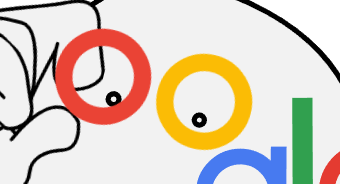

These flyers were created for Camp Journey at Ross Point, a day camp for youth afflicted by cancer. The main goal was to have something inviting and calming. These were primarily designed with the idea that they would be used in hospitals and oncology clinics.
I started my project by sketching out drafts and different ideas. Then I created the illustrator project based upon my hand drawn drafts, after the flyers was to size and completed I added in the contact information and made adjustments based upon my group's stylesheet. The flyers turned out better than I thought it would and was well received at the symposium.
This project was created as an evaluation at the end of my web design course’s second section; SVG animations. I was tasked with creating an animated google logo, similar to the official holiday logos that Google releases.

I started this project with the intention of it being used on my UpWork profile as an example for Web Design jobs. The project shows my ability to create and use large file repositories, animate web elements, and the creation of SVG images. When going
through job postings a highly-demanded skill for web design is knowledge of SVG images which this project demonstrates. The project was difficult for me since I had no knowledge of CSS animations, since my Web 1 course did not cover it, when
I started so I had to piece it together through lectures and google searches.
This was an individual assignment with much of the work being trial and error when creating the animations. I started by setting up my repositories, index files, stylesheets, and drawing out my animation to decide what I would need to have
happen in what order. I went through three phases with each moving part: SVG creation, image placement, and animations. I say phases because these happen simultaneously as adjustments had to be made throughout.
The poster was created for students attending the 2017 symposium, specifically underclassmen. This project allowed me to demonstrate my writing abilites along with my ability to create original artwork.
I started my project by sketching out drafts and researching failure in academia and its impact on students. Then I created the illustrator project based upon my hand drawn drafts and a reference of a golf hole. After the poster was to size and completed I wrote out my content and made adjustments based upon my peer reviews. The poster turned out better than I thought it would and was well received at the symposium.
{kind=link}
{kind=link}
{kind=link}